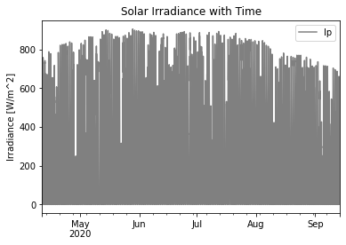

Microgrids: Point & Quantile PV Generation Forecasts
- Scope: 1 month
- Keywords: Weather Forecasts, Point & Quantile Forecasting, Verification (MAE, RMSE), Machine Learning Models, Time Series, Data Analysis & Modeling
- Tools: Python, Sklearn, Numpy, Pandas, Matplotlib
- Other Contributors: O. Olugbayila, Y. Li
- Links: [Github] [PDF]
The Problem
Using PV generation data from a 2500 meter square solar power plant installed on campus du Sart
Tilman at Université de Liege (Belgium), we aim to develop machine learning models capable of forecasting future PV generation scenarios given new weather situations.
The PV generation plant in this case study has an installed capacity of 466.4 kW.
Furtherore, the PV generation has been monitored on a minute basis from April 4, 2020 to September 14, 2020, 157 days in total, and the data is resampled to 15 minutes.
Requirements
The PV generation will be forecasted from weather data such as solar irradiance and temperature. The requirements include the assessement of both point and quantile forecasts.
Point forecasts refers to a forecast of the value of a random variable at horizon h, conditional on the information
set in reference period T.
In contrast to point forecasts, probabilistic forecasts aim at providing decision-makers with the full information
about potential future outcomes. Quantile forecasts help to address the uncertainty in forecasted values.
Quantiles define a prediction interval within which the actual value is likely to fall with a given probability P.
For the point forecasting, the tasks include:
- The implementation of persistent, linear regression and gradient boosting regressor (GBR) models from Python' scikit-learn library
- The optimization of GBR hyperparameters
- The computation of quantitative metrics such as mean absolute error (MAE) and root mean square error (RMSE)
For the quantile forecasting, we will :
- Implement a gradient boosting regressor (GBR) model
- Optimize its hyperparameters and perform visual inspection
- Compute quantitative metrics such as mean absolute error (MAE) and root mean square error (RMSE)
- Build new pair of learning and testing tests
Implementation & Results
Data Inspection
To begin, we conduct an inpection of the dataset to gather insights from the raw data. It is important to note that the dataset accessed in this project had been previously cleansed and preprocessed. The graphs below show PV generation observations (Pm) on August 2nd (and for the entire April-September period), irradiance (Ip) and temperature (Tp) data from April to September.
It can be observed that, on the date 2 August 2020, most of the solar power was generated between 6am to 6pm with the peak around noon. Additionally, the highest irradiances and largest values of temperature were registered during the months of July and August.
Point Forecasting
All the models mentioned previously have been used to train from the data and predict PV generation values prior to conducting the optimization of the GBR hyperparameters. By fine tuning these hyperparameters, we expect the model to find an optimal model that reduces the loss function and increases the accuracy of the predictions on independent data.
Our optimization method consists of varying only one hyperparameter at a time (through an iterative loop) while keeping all the others constant. The following plots represent the evolution of the error metrics as the hyperparameters learning rate, max-depth and n-estimators vary iteratively.
The figure and table below provide the scores for all the learning models (Persistent, Linear Regression, Multilayer Perceptron, Gradient Boosting Regressor) under consideration, and we can conclude that, on average, the multilayer perceptron (MLP) yields smaller NRMSE values followed by GBR, MLR and the persistent model as the least performant model.
Quantile Forecasting
Our quantile forecasting implements the Gradient Boost Regressor (GBR) model. The set of quantiles is {q = 10%, … . . , 90% }. While the point forecast informs of the conditional expectation of values, the quantile forecast is to be seen as a probabilistic threshold, which is forecasting at various quantiles of the forecast values for prediction intervals instead of the mean values.
To optimize the hyperparameters of GBR quantile, we used the same method as for the GBR point hyperparameter optimization. One hyperparameter is tuned at a time to observe the variation of the score.
When learning rate = 0.099, Max-depth = 3 and n-estimators = 81, we can obtain the smallest value of the error score.
Since the Continuous Ranked Probability Score (CRPS) can be directly compared to NMAE, the figure and the table below provide the scores for all the learning models under consideration and one can see that the predicted intervals of GBR quantile model better encompasses the actual realizations of the uncertainties than the other models.